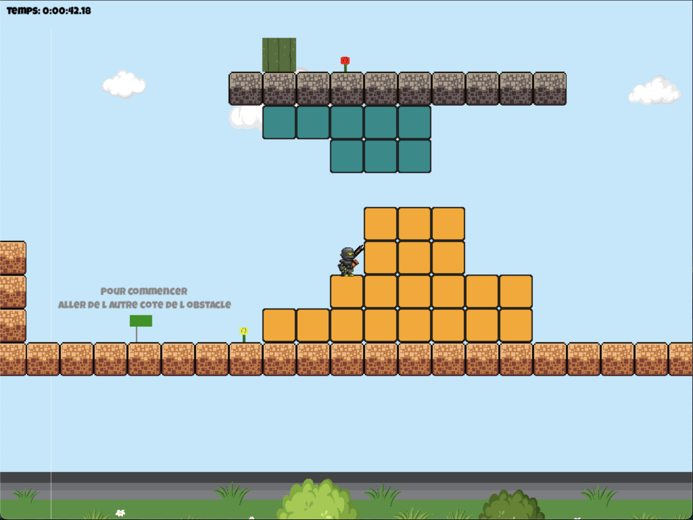
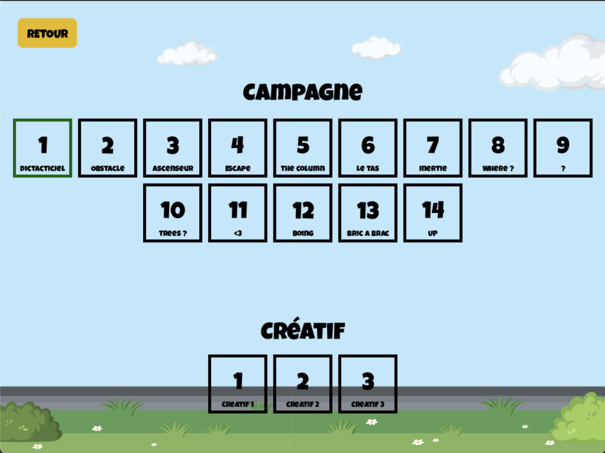

Développement d'une application web pour le club de voile YCBL permettant aux clients du club de réserver un stage pour l'été en ligne. L'application intègre une partie réservation dédié aux clients ainsi qu'une partie administration pour les employés du club afin de leur permettre de gérer les commandes et les offres proposées.
Réalisation d'une Game Jam en Python organisé par l'IUT2 de Grenoble au sein de la promo de 3ème année de BUT Informatique. L'objectif était de créer un jeu vidéo en Python avec la bibliothèque pygame en 1 semaine par équipe de 4 personnes. Le thème imposé était Maître de la gravité, l'histoire d'un robot.
Nous avons donc réalisé le jeu que nous avons nommé "Gravity Escape". Il s'agit d'un jeu vidéo de type platforme où le joueur incarne un robot qui doit réussir différents niveau. Pour y parvenir il dispose d'un canon qui lui permet de tirer des projectiles pour modifier la gravité de certains blocs.



J'étais chargé du développement de la physique du jeu. Je me suis donc occupé de créer le moteur physique en utilisant une approche orienté objet afin de faciliter le développement.
Afin de travailler à plusieurs sur le projet, j'ai mis en place un dépôt Github permettant de collaborer sur le projet
Ce projet nous a valu la seconde place à la Gamejam 2023 organisé par l'IUT.